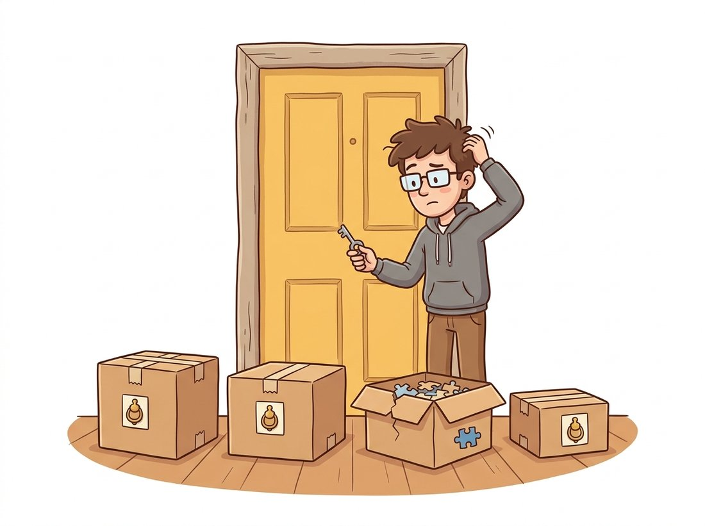

"People think I am one library. I am forty modules in a trench coat, and the one with the patent-free descriptors moved out years ago. Check the door label before you knock."
An OpenCV Build, Counting Its Modules
Almost every geometric algorithm in Part II already lives inside OpenCV, spread across three modules, and the hardest part of using them is not the math but knowing they exist, which pip wheel ships them, and which silent convention they expect. The features2d module is the detector-descriptor-matcher zoo of Chapter 10; calib3d is the calibration, pose, and stereo machinery of Chapter 12 and Chapter 13; video is the optical-flow, tracking, and Kalman toolbox of Chapter 15. This section is the map.
Throughout Part II we reached for OpenCV one function at a time: cv2.SIFT_create in Chapter 10, cv2.calibrateCamera in Chapter 12, cv2.findEssentialMat in Chapter 13, cv2.calcOpticalFlowPyrLK in Chapter 15. This section steps back and surveys the three modules those calls came from as coherent toolkits, so that the next time a geometric task appears you can guess, correctly, that OpenCV already solved it. We begin with the packaging decision that gates everything else (the illustration below sketches the three-layer workshop this section surveys).
1. The Packaging Trap: Four Wheels, One Import Name Beginner
Before any function matters, the right OpenCV must be installed, and this is where most newcomers lose an hour. The project ships four mutually exclusive PyPI wheels, all imported as cv2, and installing the wrong one makes perfectly correct code raise an AttributeError. The split exists because some classic algorithms (notably SIFT's relatives and the extra trackers) live in a separate "contrib" repository, and because headless servers want a build without GUI dependencies. The illustration below captures the trap: four wheels knock on the same door, but only the one you installed answers with the function you need.

| Package | Contains | Use when |
|---|---|---|
opencv-python | Main modules + GUI (imshow) | Desktop development, you want windows |
opencv-contrib-python | Main + contrib (xfeatures2d, extra trackers) + GUI | You need SURF, the legacy trackers, or SFM helpers |
opencv-python-headless | Main modules, no GUI | Servers, Docker, CI; imshow would crash anyway |
opencv-contrib-python-headless | Main + contrib, no GUI | Servers that also need contrib functions |
Since the relevant patents expired, SIFT moved from contrib back into the main module, so cv2.SIFT_create() works in every wheel; SURF (cv2.xfeatures2d.SURF_create) and the newer legacy trackers still require a contrib build. Code 17.1.1 is the first thing to run in any new environment: it prints the build, the version, and a quick capability probe.
# Environment probe: confirm the OpenCV version, whether this is a
# contrib build, that SIFT and ORB are importable, and whether the
# optimized SIMD/OpenCL fast paths are compiled in.
import cv2
print("OpenCV version:", cv2.__version__)
# Is this a contrib build? Probe a contrib-only symbol.
has_contrib = hasattr(cv2, "xfeatures2d")
print("contrib modules present:", has_contrib)
# These are in the MAIN module since the SIFT patent expired in 2020:
sift = cv2.SIFT_create()
orb = cv2.ORB_create()
print("SIFT and ORB available:", sift is not None and orb is not None)
# Optimized backend status (IPP / OpenCL); affects Section 17.1 timings.
print("optimized build:", cv2.useOptimized())hasattr(cv2, "xfeatures2d") is the reliable test for a contrib build, and cv2.useOptimized() reports whether the SIMD and OpenCL fast paths discussed in Chapter 8 are active.OpenCV version: 4.10.0 contrib modules present: True SIFT and ORB available: True optimized build: True
opencv-python wheel the second line would read False, the immediate signal that cv2.xfeatures2d.SURF_create and the legacy trackers will not import here.When an OpenCV call raises AttributeError: module 'cv2' has no attribute 'X', the code is rarely wrong. The environment has the wrong wheel, or two wheels were installed on top of each other so the import resolves to a partial build. The fix is mechanical: pip uninstall opencv-python opencv-contrib-python opencv-python-headless opencv-contrib-python-headless until none remain, then install exactly one. Mixing wheels is the single most common OpenCV setup bug, and it never shows up until you call the one function the installed wheel happens to lack.
For two decades, the most-asked OpenCV question was a one-line apology: cv2.SIFT_create() raised an error because the algorithm was patented, exiled to the contrib package, and renamed xfeatures2d.SIFT_create for good measure. The patent finally expired in March 2020, SIFT walked back into the main module, and a generation of Stack Overflow answers became obsolete overnight. Lowe's descriptor is one of the rare algorithms whose import path has a legal history, and remembering this is the keyword for memorizing the whole module: the patent-free verbs live in the main wheel; the encumbered and exotic ones moved to contrib.
2. features2d: The Detector, Descriptor & Matcher Zoo Intermediate
The features2d module formalizes the pipeline of Chapter 10 into three plug-compatible stages: a detector finds keypoints, a descriptor turns each keypoint's neighborhood into a vector, and a matcher pairs descriptors across images. The elegance is that every detector exposes the same detectAndCompute interface, so swapping SIFT for ORB is a one-line change. Table 17.1.2 inventories the production-relevant choices and the matcher each one demands.
| Constructor | Descriptor | Matcher norm | Notes |
|---|---|---|---|
cv2.SIFT_create() | 128-D float | NORM_L2 | Accurate, scale/rotation invariant; now patent-free and in the main wheel |
cv2.ORB_create() | 256-bit binary | NORM_HAMMING | Fast, free, the SLAM default; fewer, coarser keypoints than SIFT |
cv2.AKAZE_create() | binary (MLDB) | NORM_HAMMING | Nonlinear scale space; strong on textured surfaces, in the main wheel |
cv2.BRISK_create() | 512-bit binary | NORM_HAMMING | Scale-aware binary; a free middle ground |
cv2.xfeatures2d.SURF_create() | 64/128-D float | NORM_L2 | Contrib only, still patent-encumbered for commercial use |
The matcher pairs with the descriptor type: float descriptors use the L2 norm, binary descriptors use the Hamming distance (a bit count, computed in hardware on modern CPUs). Getting this wrong is a frequent bug, an L2 matcher on binary descriptors compiles, runs, and produces nonsense matches. Code 17.1.2 shows the canonical robust matching recipe: detect, describe, match with a k-nearest-neighbor query, then apply Lowe's ratio test to keep only confident matches, exactly the procedure derived in Chapter 10. The illustration below makes the mismatch concrete: a round float plug forced into a square binary socket runs anyway, and quietly returns garbage.
# Robust two-image matching: detect and describe keypoints with SIFT,
# pair them with a k-nearest-neighbour brute-force matcher, then keep
# only the matches that survive Lowe's ratio test.
import cv2
img1 = cv2.imread("view1.jpg", cv2.IMREAD_GRAYSCALE)
img2 = cv2.imread("view2.jpg", cv2.IMREAD_GRAYSCALE)
# Detector + descriptor in one object; one line to swap algorithms.
detector = cv2.SIFT_create(nfeatures=4000)
kp1, des1 = detector.detectAndCompute(img1, None)
kp2, des2 = detector.detectAndCompute(img2, None)
# SIFT is float -> L2 norm. For ORB/AKAZE/BRISK use cv2.NORM_HAMMING.
bf = cv2.BFMatcher(cv2.NORM_L2)
knn = bf.knnMatch(des1, des2, k=2) # two nearest neighbours each
# Lowe's ratio test: keep a match only if the best is clearly better than 2nd.
good = [m for m, n in knn if m.distance < 0.75 * n.distance]
print(f"{len(kp1)} + {len(kp2)} keypoints -> {len(good)} confident matches")cv2.NORM_HAMMING; the rest is identical, which is the whole point of the unified features2d interface.3812 + 3955 keypoints -> 642 confident matches
For large image collections the brute-force matcher becomes the bottleneck. OpenCV ships cv2.FlannBasedMatcher, an approximate nearest-neighbor index that trades a little recall for a large speedup, the same engine that scales the matching stage inside the reconstruction tools of Section 17.2.
The detect-describe-match-ratio-test pipeline of Code 17.1.2 is most of a working panorama stitcher. Take two overlapping photos, keep the confident matches, fit a homography between them with cv2.findHomography(pts1, pts2, cv2.USAC_MAGSAC) from the calib3d verbs you meet next in Section 3, warp the second image into the first with cv2.warpPerspective, and blend the seam. In well under a hundred lines you get the same effect a phone produces when it sweeps a wide shot into one image, and seeing your own keypoints, matches, and the recovered homography makes the magic legible in a way the phone never does. As a quick comparison baseline, OpenCV's one-call cv2.Stitcher_create handles a whole image list, so you can check your hand-built result against the production path. Difficulty: beginner to intermediate; about an hour for a two-image stitch.
3. calib3d: The Geometry Verbs Advanced
If features2d produces correspondences, calib3d turns them into geometry. This is the densest module in Part II's story: it implements camera calibration (Chapter 12), the fundamental and essential matrices and pose recovery (Chapter 13), the Perspective-n-Point (PnP) problem (recovering a single camera's pose from known 3D points and their 2D projections), triangulation, and dense stereo. Figure 17.1.1 organizes the module by the geometric question each function answers, which is the mental index worth memorizing.
calib3d module organized by geometric question. Calibration yields the intrinsics that two-view estimation needs; two-view relations and PnP yield the camera poses that triangulation and stereo consume. The arrows are the data dependencies that also order a reconstruction pipeline.The arrows in Figure 17.1.1 are also the order to memorize the module, a five-question chain that mirrors how a reconstruction actually proceeds: what lens, how two views relate, where the camera is, where the point is, how far every pixel. Each answer feeds the next (calibration yields the intrinsics two-view estimation needs, which yields the poses triangulation and stereo consume), so recalling the order recalls the data dependencies for free.
A recurring detail trips up everyone once: most calib3d functions return a rotation as a 3-element Rodrigues vector (an axis-angle encoding), not a $3 \times 3$ matrix. The conversion is $R = $ cv2.Rodrigues(rvec)[0], and a rotation $R$ with translation $\mathbf{t}$ composes the projection $\mathbf{x} \sim K [R \mid \mathbf{t}] \mathbf{X}$ from Chapter 12. Code 17.1.3 chains the verbs into a minimal two-view pose recovery, the computational core of the structure-from-motion of Chapter 14.
# Two-view pose recovery: estimate the essential matrix from matched
# points, decompose it into relative rotation and translation, then
# triangulate the inlier correspondences into 3D coordinates.
import cv2
import numpy as np
# pts1, pts2: matched, undistorted image points (Nx2 float32); K: intrinsics.
E, mask = cv2.findEssentialMat(pts1, pts2, K,
method=cv2.USAC_MAGSAC, # modern robust estimator
prob=0.999, threshold=1.0)
# Decompose E into relative pose, keeping only the cheirality-valid solution.
n_inliers, R, t, mask_pose = cv2.recoverPose(E, pts1, pts2, K, mask=mask)
print(f"recovered pose from {n_inliers} inliers")
# Triangulate the inliers into 3D (homogeneous), given the two camera matrices.
P1 = K @ np.hstack([np.eye(3), np.zeros((3, 1))]) # first camera at origin
P2 = K @ np.hstack([R, t]) # second camera pose
inl = mask_pose.ravel().astype(bool)
X_h = cv2.triangulatePoints(P1, P2, pts1[inl].T, pts2[inl].T)
X = (X_h[:3] / X_h[3]).T # de-homogenize -> Nx3
print("triangulated points:", X.shape)recovered pose from 588 inliers triangulated points: (588, 3)
(N, 3) array.A faithful from-scratch RANSAC for essential-matrix estimation, with minimal-sample drawing, model scoring, inlier counting, and local optimization, runs to roughly 80 to 120 lines (we wrote one in Chapter 13). Passing method=cv2.USAC_MAGSAC to cv2.findEssentialMat replaces all of it with one keyword. USAC is OpenCV's unified robust-estimation framework: it handles the sampling, the marginalizing MAGSAC++ scoring that removes the brittle inlier threshold, local refinement, and a final least-squares fit on the inlier set, internally and in optimized C++. The same USAC_* flags work for findHomography and findFundamentalMat, so one keyword upgrades every robust fit in your codebase.
3.1 Dense Stereo in One Object
For rectified stereo pairs, cv2.StereoSGBM_create implements the semi-global matching of Chapter 13: it computes a per-pixel disparity by aggregating matching costs along multiple 1D paths, an efficient approximation to a full 2D smoothness optimization. The disparity $d$ converts to depth $Z$ by $Z = f B / d$, where $f$ is the focal length and $B$ the baseline (the distance between the two cameras); the inverse relationship is the intuition that near objects shift a lot between the two views while far ones barely move, exactly as a nearby finger jumps more than the horizon when you blink one eye at a time. Figure 17.1.2 makes that inverse law geometric: two rectified cameras view the same point, and the closer the point, the wider the angle between the two sightlines and the larger the disparity it produces on the image planes. The block size and the two smoothness penalties $P_1, P_2$ are the parameters worth tuning; the defaults rarely suit a new camera.
StereoSGBM and the depth equation $Z = f B / d$. Two rectified cameras a baseline $B$ apart, each with focal length $f$, view the same scene point. The near point (orange) subtends a wide angle between the two sightlines and so projects to a large disparity $d$; the far point (purple, dashed rays) subtends a narrow angle and a small disparity. Disparity and depth are inversely related, which is why StereoSGBM resolves nearby surfaces far more finely than distant ones, and why a wider baseline buys depth precision at the cost of a harder matching problem.Build intuition for $P_1, P_2$ in five minutes on one rectified pair. Make a cv2.StereoSGBM_create object, then loop blockSize over [3, 5, 9, 15] with everything else fixed and watch the disparity map: small blocks resolve fine detail but speckle in textureless regions, large blocks smooth the speckle away but blur depth edges. Then fix a mid block size and sweep P2 over [8, 32, 128] * blockSize**2 while keeping the common rule P1 = P2 / 4. Observe that raising $P_2$ penalizes large disparity jumps harder, so the map grows visibly smoother across surfaces yet starts bleeding depth across true object boundaries. The thing to notice is the trade you cannot escape: every setting that suppresses noise also softens a real edge somewhere, which is exactly why the defaults rarely transfer to a new camera. Difficulty: beginner; about five minutes per sweep.
4. video: Flow, Trackers & the Kalman Filter Intermediate
Where features2d and calib3d reason about geometry inside a single frame or across a static pair, the last module turns to what changes between frames. The video module is the temporal half of OpenCV and the home of Chapter 15. It splits into three families: sparse and dense optical flow, object trackers, and the cv2.KalmanFilter state estimator. Sparse flow (cv2.calcOpticalFlowPyrLK) follows a handful of corners across frames using the pyramidal Lucas-Kanade method; dense flow (cv2.calcOpticalFlowFarneback, or the contrib cv2.optflow algorithms) estimates a motion vector at every pixel. Code 17.1.4 is the standard sparse-flow loop: find good corners to track, then propagate them with a forward-backward consistency check that discards points the tracker lost.
# Sparse optical-flow loop: seed Shi-Tomasi corners on the first frame,
# then track them frame to frame with pyramidal Lucas-Kanade, keeping
# only the points the tracker reports as successfully followed.
import cv2
import numpy as np
cap = cv2.VideoCapture("walk.mp4")
ok, prev = cap.read()
prev_gray = cv2.cvtColor(prev, cv2.COLOR_BGR2GRAY)
# Shi-Tomasi corners are the classic features to track (Chapter 15).
p0 = cv2.goodFeaturesToTrack(prev_gray, maxCorners=200, qualityLevel=0.3,
minDistance=7)
while True:
ok, frame = cap.read()
if not ok:
break
gray = cv2.cvtColor(frame, cv2.COLOR_BGR2GRAY)
# Pyramidal Lucas-Kanade: track p0 forward; st==1 marks successful tracks.
p1, st, err = cv2.calcOpticalFlowPyrLK(prev_gray, gray, p0, None)
good_new = p1[st.ravel() == 1]
# ... draw or store the tracks here ...
prev_gray, p0 = gray, good_new.reshape(-1, 1, 2)
cap.release()goodFeaturesToTrack and pyramidal Lucas-Kanade. The st status array is the cheap quality filter; in production a forward-backward re-projection check (track forward, then back, and reject points that do not return near their origin) further prunes drifting tracks.
The tracker family wraps higher-level single-object trackers behind a uniform init/update interface. The correlation-filter tracker cv2.TrackerKCF_create and the more accurate cv2.TrackerCSRT_create live in the main wheel; several others moved to cv2.legacy in OpenCV 4.5. The cv2.KalmanFilter class implements the constant-velocity and constant-acceleration state estimators of Chapter 15, the predict-correct recursion that smooths a noisy detector into a stable track and bridges short occlusions.
That last property, bridging an occlusion, is worth unpacking, because it is not a special case but a direct consequence of the two-step structure. When the detector returns nothing for a frame, the filter simply runs the predict step (advance the state by the motion model) and skips the correct step, so it coasts on its last estimated velocity and keeps emitting a plausible position until a detection reappears and pulls the estimate back. That same predict-without-correct mechanism is why the filter degrades gracefully under a few missed frames instead of dropping the track entirely.
Who: A two-person team building a sports-analytics tool that tracks players from broadcast footage.
Situation: Their prototype, developed on a laptop with opencv-contrib-python, used cv2.legacy.TrackerMOSSE_create for fast per-player tracking and ran beautifully.
Problem: The Dockerized service, built on opencv-python-headless to keep the image small, crashed on startup with AttributeError: module 'cv2' has no attribute 'legacy'. The legacy trackers are contrib-only, and the headless main wheel does not ship them. The error never appeared in development because the laptop had a different wheel.
Dilemma: Three fixes competed. Swapping in opencv-contrib-python-headless would restore MOSSE but add roughly 30 MB to the image and pull in modules they did not need. Bundling the full desktop opencv-contrib-python matched the laptop exactly but reintroduced GUI dependencies the headless build existed to avoid. Switching to a main-wheel tracker meant rewriting and re-tuning the tracking loop, yet kept the container lean and dependency-clean. None of the three was free.
Decision: Rather than fatten the container with the full contrib build, they switched to cv2.TrackerCSRT_create (main wheel, slightly slower but more accurate) and pinned a single explicit wheel in requirements.txt with a comment explaining why.
Result: The container shrank, the crash disappeared, and tracking quality improved. The incident cost an afternoon of confusion that Code 17.1.1's capability probe would have caught in the first CI run.
Lesson: Pin the exact OpenCV wheel, and probe for the symbols you depend on at startup. The development and deployment environments must agree on the wheel, not just the version number.
The classical features2d detectors are increasingly paired with, or replaced by, learned components, and OpenCV is absorbing them. Its cv2.dnn module already runs ONNX models, and the 2024 to 2025 trend is to drop learned features into the same matching pipeline: SuperPoint (DeTone et al., CVPRW 2018) as a learned detector-descriptor and LightGlue (Lindenberger et al., ICCV 2023) as an adaptive learned matcher now routinely outperform SIFT plus FLANN on hard wide-baseline pairs, and the kornia.feature library exposes both behind an interface that mirrors features2d. On the dense side, learned optical flow such as RAFT (Teed and Deng, ECCV 2020) and the 2024 SEA-RAFT have overtaken Farneback on every benchmark in Section 17.3, and you will meet them as first-class citizens in Chapter 26. The practical pattern for 2026: keep OpenCV for the robust geometry verbs in calib3d, which remain the reliable default for classical estimation, and swap learned modules into the feature and flow stages where data-driven methods have pulled ahead.
For each pairing, state whether it is correct and what symptom a wrong pairing produces: (a) ORB descriptors with cv2.BFMatcher(cv2.NORM_L2); (b) SIFT descriptors with cv2.NORM_HAMMING; (c) AKAZE descriptors with cv2.NORM_HAMMING; (d) SIFT descriptors fed to cv2.FlannBasedMatcher with default KD-tree parameters. For the wrong pairings, explain why the code still runs without raising an exception, which is what makes the bug dangerous.
Take any image pair with overlap. For SIFT, ORB, AKAZE, and BRISK, run the Code 17.1.2 pipeline (adjusting the matcher norm per Table 17.1.2) and record three numbers per detector: keypoint count, confident matches after the ratio test, and wall-clock time for detectAndCompute. Then estimate an essential matrix from each detector's matches with cv2.findEssentialMat(..., cv2.USAC_MAGSAC) and compare inlier counts. Which detector gives the best speed-versus-inliers trade-off on your pair, and does the ranking match Table 17.1.2's notes?
Build a random rotation matrix $R$ (orthonormal, determinant $+1$). Convert it to a Rodrigues vector with cv2.Rodrigues, then back to a matrix, and measure the maximum element-wise difference from the original. Now repeat for a rotation very close to 180 degrees about an axis. Explain why the round-trip error grows near 180 degrees, relating your finding to the axis-angle singularity, and state one practical consequence for pose estimation in Chapter 14.